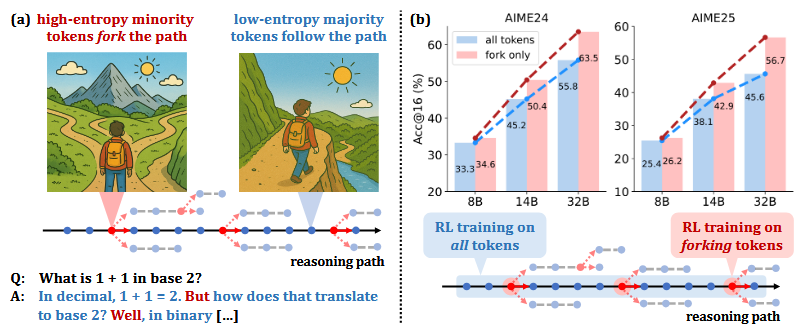

Literature Review: Beyond the 80/20 Rule – High-Entropy Minority Tokens Drive Effective RL for LLM Reasoning
The paper investigates why Reinforcement Learning with Verifiable Rewards (RLVR) boosts reasoning in large language models (LLMs). By analysing token-level entropy during chain-of-thought (CoT) reasoning, the authors discover that only a small subset of high-entropy tokens, dubbed forking tokens, determine the critical decision points. They show that RLVR primarily modifies these tokens and that explicitly restricting policy-gradient updates to them can match or surpass full-gradient training while touching as little as 20 % of the sequence.
Key Insights
- Forking tokens as levers of reasoning – High-entropy tokens appear at decision junctures in CoT traces; adjusting them steers the entire reasoning path.
- Beyond the classic 80/20 rule – Performance plateaus when gradients are applied to ~20 % of the highest-entropy tokens; updating the remaining 80 % can even degrade accuracy.
- Compute–efficiency trade-off – Token-restricted RLVR achieves comparable gains on Qwen3-8B while cutting gradient computations by 80 %; on larger Qwen3-14B/32B it outperforms full-gradient RLVR by up to +11.0 AIME’25 points.
- Entropy as an intrinsic confidence signal – The work supports a growing view that entropy offers a reliable proxy for model uncertainty and can guide both decoding and learning.
- Scalability – Benefits grow with model size, hinting that selective optimisation may be critical for very large models where full back-prop is increasingly impractical.

(a) In CoTs, only a minority of tokens exhibit high entropy and act as "forks" in reasoning paths, while majority tokens are low-entropy. (b) RLVR using policy gradients of only forking tokens delivers significant performance gains that scale with model size. With a 20k maximum response length, our 32B model sets new SoTA scores (63.5 on AIME’24 and 56.7 on AIME’25) for RLVR on base models under 600B. Extending the maximum response length to 29k further boosts the AIME’24 score to 68.1
Example
Consider a math word problem where multiple solution paths diverge at the step “choose the larger root”. The probability distribution over next tokens is flat here (high entropy). RLVR, constrained to high-entropy tokens, increases the likelihood of the correct branch (e.g., “root = 4”) without wasting updates on deterministic tokens like punctuation or units. The model therefore converges faster and generalises better on downstream math benchmarks.
Ratings
Novelty: 4/5 The paper’s insight that “forking” (high-entropy) tokens concentrate the useful gradient signal is genuinely new for RLVR in LLMs, but sparse or uncertainty-guided updates have prior art, so it isn’t totally unprecedented.
Clarity: 3/5 The narrative is technically correct yet packed with jargon; crucial reproducibility details such as how the entropy cutoff is chosen, how many steps are frozen, what happens when entropy is mis-calibrated are relegated to brief footnotes, forcing readers to reverse-engineer the method.
Personal Perspective
This work echoes early sparse-update ideas from adaptive computation research in the 1990s, now resurrected in the LLM era with an information-theoretic twist. Targeting gradients to uncertainty hotspots feels intuitively right, the network should learn where it is unsure rather than where it is already confident.
What excites me is the implied scalability: if sub-linear gradient coverage suffices, trillion-parameter models become more economically trainable. However, in open-ended dialogue the entropy landscape is noisier than in mathematical proofs. Applying the method to safety-critical alignment or multilingual tasks would test its generality.
Overall, this paper provides a compelling micro-analysis of RLVR and a pragmatic recipe for leaner fine-tuning. It nudges the field toward principled sparsity rather than uniform gradient descent, a direction I expect to gain more momentum as models and budgets scale.
Enjoy Reading This Article?
Here are some more articles you might like to read next: